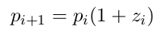

# iterative improvement framework
def improve(update, close, guess=1):
while not close(guess):
guess = update(guess)
return guess
def approx_eq(x, y, tolerance=1e-5):
return abs(x - y) < tolerance
# Newton's method
def make_derivative(f, delta=1e-5):
def derivative(x):
df = f(x + delta) - f(x)
return df / delta
return derivative
def newton_update(f, df):
def update(x):
return x - f(x) / df(x)
return update
def find_zero(f, df):
def near_zero(x):
return approx_eq(f(x), 0)
return improve(newton_update(f, df), near_zero)Contents
Each question has a "Toggle Solution" button -- click it to reveal that question's solution.
Code Writing
Q1
Using Newton's method, write a function fourth_root that calculates the fourth root of a number x. Note: this is not quite the same as finding the root of the fourth root (since that's just x = 0).
def fourth_root(x):
"*** YOUR CODE HERE ***" def fourth_root(x):
f = lambda y: y**4 - x
return find_zero(f, make_derivative(f))Q2
An elementary exercise in calculus is to
find a critical point of a function. The critical point
of a mathematical function f is a value x such
that the derivative of f at x is equal to 0 (i.e.
f'(x) = 0). For example, the critical point of
f(x) = (x - 1)
Write a function critical_point that takes a function f and returns a critical point for that function.
def critical_point(f):
"""Returns a single critical point for the function F."""
"*** YOUR CODE HERE ***" def critical_point(f):
df = make_derivative(f)
ddf = make_derivative(df)
return find_zero(df, ddf)Q3
If Newton's method reaches a guess that has a slope of 0 (also known as a critical point), then newton_update will raise a ZeroDivisionError (i.e. the derivative of the function = 0). Rewrite newton_update to add a small offset to the derivative if it is equal to zero to avoid this problem.
def newton_update(f, df, offset=1e-5):
"*** YOUR CODE HERE ***" def newton_update(f, df, offset=1e-5):
def update(x):
deriv = df(x)
if deriv == 0:
deriv += offset
return x - f(x) / deriv
return updateQ4
In economics, tâtonnement is an iterative process for finding price equilibria in a market. The price of a good is adjusted depending on the amount of excess demand until demand is equal to supply. The price at which this happens is called the equilibrium price. Here is one such recurrence for finding the equilibrium price:
where pi is the price at iteration i, and zi is the excess demand (demand minus supply) at iteration i.
Write a function equilibrium, which takes in a supply and demand function (both functions that take in a price as an argument and output a quantity), and returns an approximation of the equilibrium price. See the docstring for more details.
def equilibrium(supply, demand, tolerance=1e-2):
"""Calculates the equilibrium price for the given SUPPLY and
DEMAND functions.
You need to figure out two things: the UPDATE function and the
ISCLOSE function. UPDATE should follow the equation described
above. ISCLOSE should return True when demand minus supply is less
than certain TOLERANCE level.
PARAMETERS:
supply -- a function that takes a price and outputs
demand -- a function that takes a price and outputs
tolerance -- how far from 0 the excess demand can vary
"""
initial_guess = 1
def update(p):
"*** YOUR CODE HERE ***"
def close(p):
"*** YOUR CODE HERE ***"
return improve(update, isclose, initial_guess)def equilibrium(supply, demand, tolerance=1e-2):
initial_guess = 1
def update(p):
return p * (1 + demand(p) - supply(p))
def isclose(p):
return abs(demand(p) - supply(p)) <= tolerance
return improve(update, isclose, initial_guess)